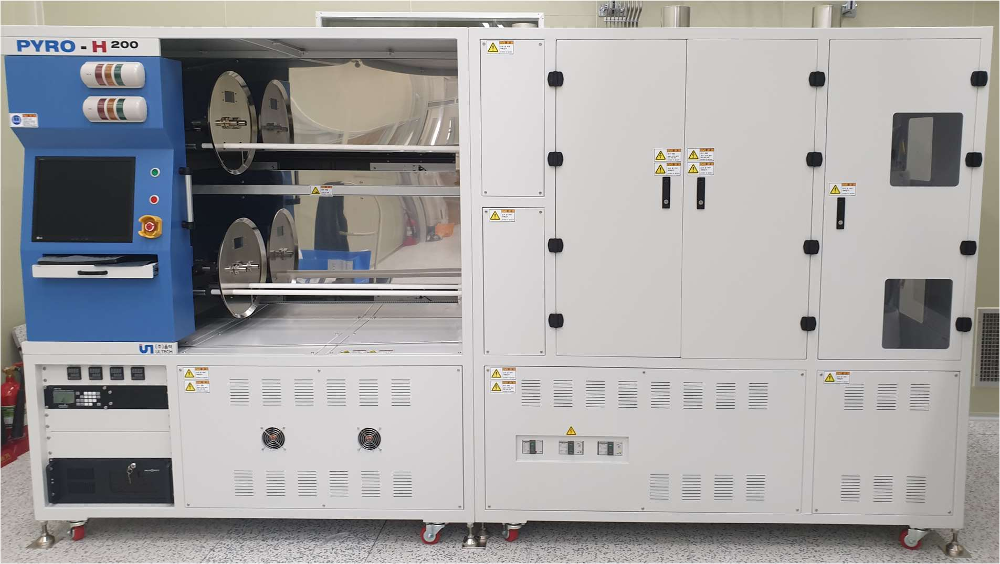

- Hardware Configuration
세부 내용
1) COMPUTER: 본 장비의 Hardware Configuration은 다음과 같다.
Item Specification Remark POWER SUPPLY Single ATX/PFC 600W CPU Intel G5400 3.7GHz RAM PC-19200 8Gb OS Win 10 64bit HDD SSD 250G Monitor 17inch Mother board H310 ATX Motherboard
- Software Configuration
세부 내용
1) Operating system: Microsoft Windows 10 Home edition
2) Software development tool: Labview
- System Composition
- Component Description
- Component explanation
세부 내용
|  |
본 장비는 크게 Loader module, heater module, gas module, control module 이렇게 네 가지 부위로 나눌 수 있다. 아래에서 각
부위에 대해 자세히 설명하고자 한다.
1) Control module
세부 내용
본 장비의 모든 동작 및 상태를 확인 할 수 있으며 장비를 전체적으로 제어할 수 있도록 구성된 곳이다. 기본적으로 PC program으로 구성되어 있어서 기본적인
동작들은 자동으로 동작되며, 위험 방지 및 사고 방지를 위한 alarm & interlock 기능이 상시 동작 중이다.
 |
 |
| < System control part of control module> | < Controller part of control module> |
2) Loader module
세부 내용
공정에 필요한 샘플을 heater module 내부로 이송/반송 시키기 위한 module로서, AC motor를 이용 하여 동작을 제어한다.Loader
module에 사용된 파트는 대부분이 quartz & ceramic이기 때문에 취급에 각별히 유의해야 하며, 작은 충격에도 쉽게 파손될 수 있음을 유의 해야 한다.
Loader module이 heater module 내부로 들어 가거나 되돌아 나올 때 상하좌우 align이 맞춰져 있는 상태 이기 때문에, 사용자가 임의로
loader module의 분해 및 조립을 해서는 안된다.
 |
 |
| < Loader module> | < Quartz baffle of loader module> |
3) Heater module
세부 내용
본 장비에서 공정을 진행하는 곳이며 공정 진행을 위한 process chamber와 같은 역할을 하는 곳이며, 고온으로 heating을 하기 위한 heater가
설치 되어 있다.
Loader module이 공정 용 샘플을 이송/반송 하기 위한 heater module의 입구부분 반대편 에는 공정을 하기 위한 gas 주입부가 설치 되어 있다. Heater module 내부의 heater 내부에는 공정 시 공정 균일도 향상을 위해 공정 가스가 흘러가는 방향 및 양 조절을 위한 Baffle이 설치되어 있다.
Loader module이 공정 용 샘플을 이송/반송 하기 위한 heater module의 입구부분 반대편 에는 공정을 하기 위한 gas 주입부가 설치 되어 있다. Heater module 내부의 heater 내부에는 공정 시 공정 균일도 향상을 위해 공정 가스가 흘러가는 방향 및 양 조절을 위한 Baffle이 설치되어 있다.
 |
| < Heater part of heater module> |
4) Gas module
세부 내용
공정에 필요한 gas를 heater module로 주입시키기 위한 gas line 및 bubbler가 설치되어 있는 공간 이다. Dry oxidation 공정을
위해 O2 gas를 사용할 수도 있고 wet oxidation 공정을 위해 Di water를 bubbling 하여 사용할 수 있도록 구성되어 있다.
Wet oxidation에 사용되는 DI water는 매 공정 시 마다 새것으로 교체해 주어야 하며, 연속으로 공정을 진행하는 경우에는 매번 교체할 필요는 없다.
Wet oxidation에 사용되는 DI water는 매 공정 시 마다 새것으로 교체해 주어야 하며, 연속으로 공정을 진행하는 경우에는 매번 교체할 필요는 없다.
 |
 |
| < Gas line & bubbler of gas module> | < Gas injection port of gas module> |
4) ON/OFF/EMO panel
세부 내용
System의 전원을 ON/OFF 하기 위한 스위치가 설치 되어 있고, 장비 가동 중 비상 상황 발생 시 장비의 전원을 순간적으로 차단시킬 수 있는
EMO(Emergency switch)가 설치되어 있다.
EMO는 눌러서 동작 시킬 수 있으며 동작 시 tower lamp에 적색 등이 점등되고, 버저가 동작되 도록 되어 있다. EMO는 EMO 표면에 그려진 화살표 방향데로 약 15도~20도 정도 돌리면 자동 으로 앞으로 약간 튀어나오면서 동작이 중지된다.
EMO는 눌러서 동작 시킬 수 있으며 동작 시 tower lamp에 적색 등이 점등되고, 버저가 동작되 도록 되어 있다. EMO는 EMO 표면에 그려진 화살표 방향데로 약 15도~20도 정도 돌리면 자동 으로 앞으로 약간 튀어나오면서 동작이 중지된다.
| < ON/OFF/EMO panel> |
5) Temperature controller
세부 내용
Oxidation system에는 2개의 heater 가 설치 되어 있는데 각 가 tube #1, tube #2로 부르며 해당 heater의 온도 및 현재 상태를
제어하기 위해 temperature controller 가 사용되어 있으며, 제어 프로그램에서 원하는 목표 온도를 설정하면 프로그램과 temperature
Controller가 서로 통신하여 목표 온도를 세팅하고 자동으로 온도를 올려서 목표 온도 까지 도달되게 한다.
각 heater는 일반적으로 사용되는 220V가 아닌 특정 전압을 사용하기 때문에 큰 용량의 Voltage down transformer가 설치 되어 있고 이 것의 온도를 측정하기 위한 temperature Controller가 설치 되어 있다. (trans 용 temperature controller는 온도를 읽어 들이는 용도 이며, 온도를 올리는 동작 을 수행할 수 없다.
각 heater는 일반적으로 사용되는 220V가 아닌 특정 전압을 사용하기 때문에 큰 용량의 Voltage down transformer가 설치 되어 있고 이 것의 온도를 측정하기 위한 temperature Controller가 설치 되어 있다. (trans 용 temperature controller는 온도를 읽어 들이는 용도 이며, 온도를 올리는 동작 을 수행할 수 없다.
 |
| < Temperature controller> |
6) MFC controller
세부 내용
공정 시 사용되는 gas의 유령을 조절하기 위해 사용되는 controller로써, MFC와 controller 간에는 cable로 연결되어 가스가 흘러가는 량을
설정하고 흘러가는 량이 얼마나 되는지 확인하여 전면 부 표시창에 알려준다.
제어 프로그램에서 원하는 gas와 유량을 설정하면 프로그램과 MFC controller가 서로 통신하여 목표 유량을 설정하고 자동으로 가스가 흘러가도록 제어한다.
제어 프로그램에서 원하는 gas와 유량을 설정하면 프로그램과 MFC controller가 서로 통신하여 목표 유량을 설정하고 자동으로 가스가 흘러가도록 제어한다.
 |
| < MFC controller> |
- System Power On / Off
- Program Start-up / Shut-down
- User Level for security (Log in & Log out)
- Top Tool Bar
- Bottom Tool Bar
- Main screen
- Recipe Page
- Config Page
- Data log Set Page
- System Status Page